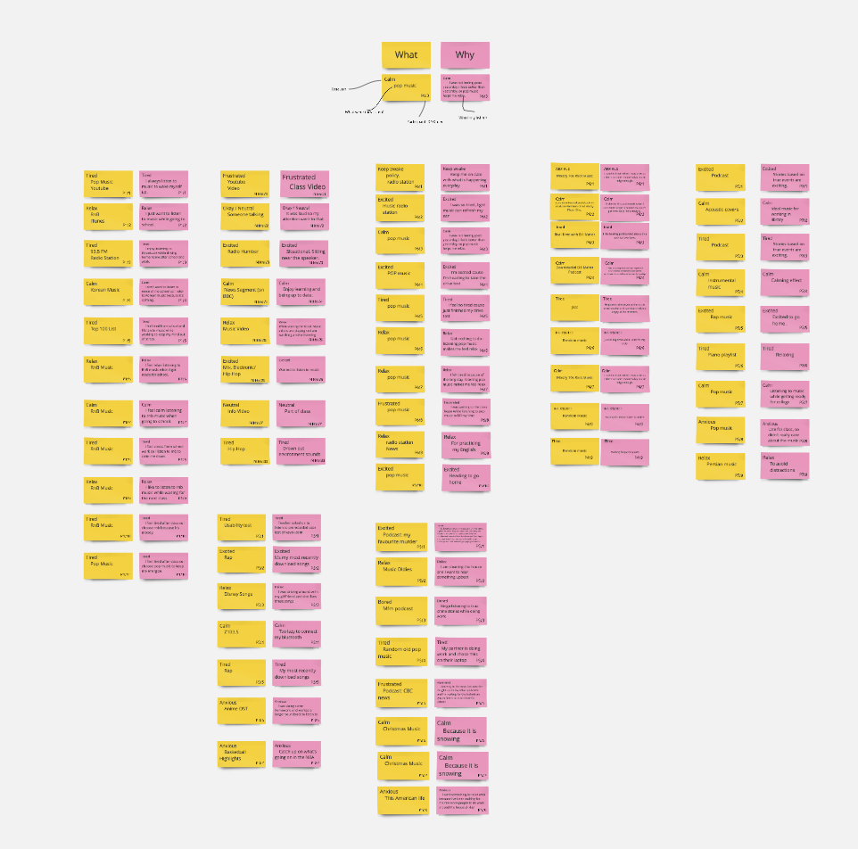
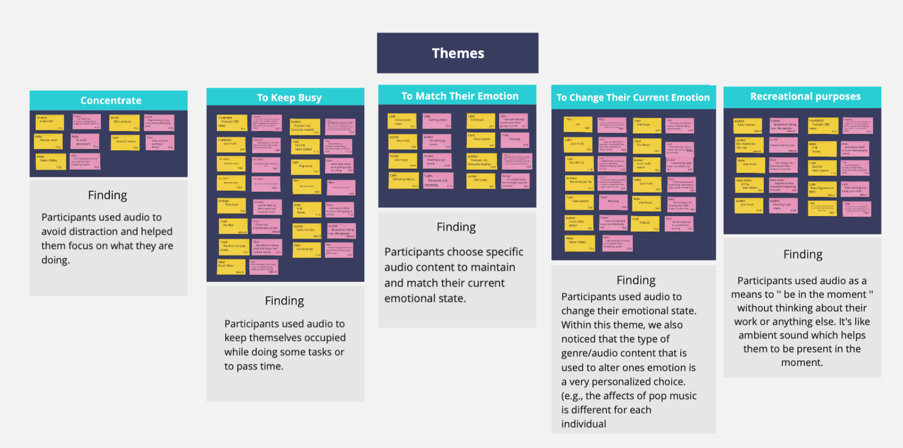
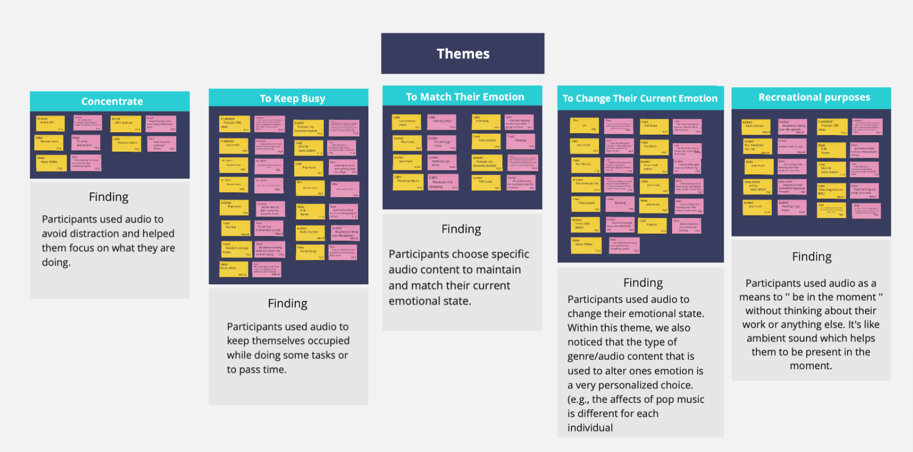
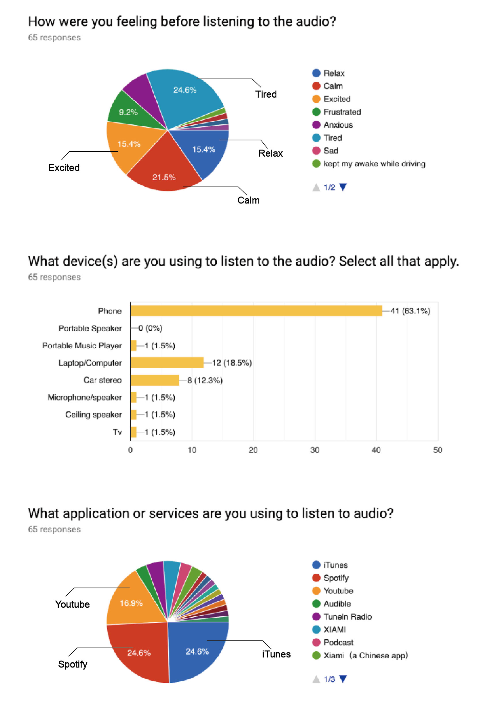

DIARY STUDY
A senior UX researcher Aidan Bryant describes diary studies as research that takes place over a long period with the same participants. Users have to self-report their activities at regular intervals to create a log of their activities, thoughts, and frustrations.
SCENARIO
Company X provides a music streaming service to its customers. In recent years they’ve found space is more crowded and harder to compete in. We have been hired by the client to help them understand people’s current behaviour, emotions, and experiences listening to audio entertainment (e.g., music, podcasts, radio, audiobooks, etc.)
PARTICIPANTS
Our participants are post-secondary students of Humber college. Age is between 22 to 27, including female and male.
PROCESS
Phase 1: Plan
Define research Questions
In this stage, my team start from understanding our client’s goal. The client wants to understand people’s current behaviour, emotions, and experiences listening to audio entertainment.
We frame the research topic before defining the research question and brainstormed which topic can help the client to reach their goal most. Then, we came out motivation as our research topic. To be more specific, we listed out four factors of motivation — age, an expectation of gain, inspiration, and emotion. Next, generate these factors into research questions.
Finally, we satisfied most with the research question of emotion.
Our research question is:
How do users’ emotions influence what audio they choose to listen?
How do users’ emotions influence what audio they choose to listen?
Generate research question

Our Google form of the diary study
Research Plan
Participants will be asked to conduct diary studies through their daily routine. They will be asked to complete a Google form questionnaire after each audio experience they encountered on the stated days. Our sampling frequency will be a minimum of 3 entries per day. Participants will be encouraged to submit more if they feel it is appropriate. Each team member of user experience research will be assigned a participant to assist and monitor throughout the study.
Additionally, each participant will be assigned a participant ID for privacy and secure coding of data for analysis.
Each diary entry includes 4 close-ended and two open-ended questions. These questions will provide a mix of qualitative and quantitative data.
PHASE 2: RUNNING A STUDY
This stage is the most exciting part of the research. You’ll never know what will be the participant’s answer. Participant’s reply of each entry is a surprise box.
The worth to notice is we must send a reminder email to the participant and monitor whether they reply the google form at least 3 times per day, to ensure we won’t lose any valid data.
Onboarding email

Google sheet of the diary study responses
PHASE 3: ANALYSIS
Initial review of data
The first step of data analyzing is the initial review of data.
Filter out the entries that did not follow instructions.
Affinity diagramming
To break up qualitative data and find out particular themes, we chose Affinity diagram as our toolkit.
Affinity Diagram
Affinity diagramming is an inductive method where you break up qualitative data from user research or design activities into small chunks and then organize those chunks into groups of related information that highlight particular themes. - Chauncey Wilson

Steps of Affinity diagram- Chauncey Wilson
Step 1. Pull out key points
We noticed that we could understand the participants more from our two open-end questions.
What audio content are you listen?
Why are you listening to this specific content?
Thus, we decide to prepare our post-it notes for Affinity diagram based on the response contents of these two questions also including one more key point we need-Emotion.
The response of emotions are from our diary question
— How were you feeling before listening to the audio?
Moreover, adding participant ID and time order can help us know the post-it is from which response, and easier to organize the amount of data. Finally, our post-it becomes below format.

The format of Post-it note

Arranged post-it notes on the wall -Photographer Cem Guler
Step2. Placed on a wall
After we create our post-it notes, we move on to arrange them on the wall.
In the beginning, we category memos into groups based on the user’s emotion.
We arranged like this is for the convenience of searching out the themes. They have not become Affinity diagram yet.
Step 3. Group Similar findings
We move on to figure out the similar points. This stage needs plenty of time for us to complete. Each participant gave us different answers but also have a similarity link to each other. Some memos could be in two different group at the same time.
The interesting part we first noticed is some of our participants express their feeling changed after listening to the audio even we didn’t ask their feelings after an audio experience.
We also found the definition of genre/audio type is different by each. For example, classical music may be calming to one person, but boring to another person.

We struggled in grouping similar findings -Photographer Cem Guler


Digital version of our post-its before organized

Affinity diagram-including five themes
Step4. Digital post-it and emerge themes
Due to the limited time of the group meeting, we made our post-it notes into the digital version on Realtime board for having more convenience of online discussion.
After the struggle of group findings, we finally came out the five themes.
To Change Their Current Emotion
Participants used audio to change their emotional state. Within this theme, we also noticed that the type of audio content that is used to alter one’s emotion is a very personalized choice.
To Match Their Emotion
Participants choose specific audio content to maintain and match their current emotional state.
Recreational purposes
Participants used audio as a means to ‘’ be in the moment‘’, and enjoy the audio without thinking about their work or anything else. It’s like ambient sound which helps them to be present at the moment.
To Keep Busy
Participants who are waiting or commuting used audio to keep themselves occupied to pass the time.
To Be Concentrate
Participants used audio to avoid distraction and helped them focus on what they are doing.
RESULT
“How do users’ emotions influence what audio they choose to listen?”
Most people who are tired would like to listen to the audio which can help them change the emotion and become relaxed. However, the genre of audio depends on the user’s habit. There is no specific genre for every user to relax.
The users who are calm or excited would like to listen to specific audio content which can maintain and match their current emotional state.
Photo by Steinar Engeland on Unsplash
Participants who have recreational purposes with positive emotions such as calm, relax, and excited would like to choose the audio as a means to ‘’ be in the moment‘’, and enjoy the audio without thinking about their work or anything else.
Participants who are waiting or commuting with negative emotions such as frustrated, tired, and anxious used random audio or the audio they accustomed to listening. To keep themselves occupied and pass the time. They did not care about the genre of audio.
Nevertheless, the emotion would not be the main factor for users to choose audio to listen for the scenario below.
Participants who would like to focus on what they are doing and being concentrate will listen to the audio to avoid distraction. In this scenario, their emotions are diverse, environment and situational factors have more influence than emotion.
Sub findings:
The top three emotion participants had were tried, calm, and relax/excited.
Most of the people use a mobile phone to listen to the audio.
Top three App/Service participants used were Spotify, iTunes, and Youtube.

The data from our Google form of diary study responses
REFLECTIONS

Team members of this project